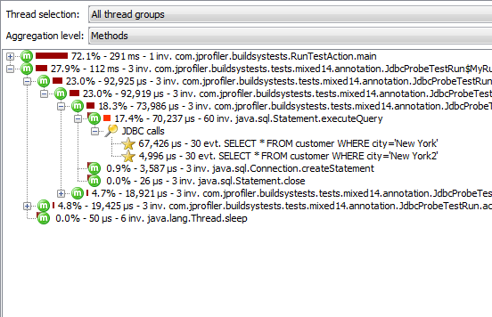

Probes explained |
The probes facility in JProfiler is exposed through an API, so you can write your own custom probe to capture information on other subsystems as well. Because JProfiler allows you to enter scripts directly in the JProfiler GUI, custom probes can also be configured and deployed without using your IDE and without modifying the profiled application.
Probes intercept selected methods to collect data. At method entry, a probe will usually extract semantic data from the method arguments and store it for later use. Some method invocations will just be intercepted for collecting information, other method invocations define time-consuming operations that are measured by the probe. When such methods exit (either via a return or through an exception), the probe will retrieve the stored data, determine how long the method execution has taken, and publish an event.
An event contains the following information: a start time, an optional duration, the associated thread and a description that is constructed by the probe to describe the event. Also, an event has an event type that distinguishes various classes of events. For example, the JDBC probe publishes different events for statement, prepared statement and batch execution. In addition, an event can have an associated stack trace.
From these basic events, JProfiler calculates more aggregated data as explained below. After an event has been processed, it can either be discarded or retained for inspection in the probe events view. You can make this decision yourself in the probe settings. By default, only the JEE probes are configured to record single events. In other probes, a lot of events can be generated very quickly. File I/O, for example produces a lot of events. To prevent excessive memory usage, JProfiler consolidates events. The event cap is configured in the profiling settings and applies to all probes. Only the most recent events are retained, older events are discarded. This consolidation does not affect the higher-level views.
For events that have an associated stack trace, the probe can then publish the event description as payload into the recorded call tree. The event description then becomes the payload name. If you record CPU data, you can open the call tree view in the CPU section and locate a call trace where a probe intercepts data, for example, a database connection executing JDBC statements. You will see a payload container node that contains the payload names that have been published, in our example the SQL strings.

In the call tree, events with the same payload names and stack traces are aggregated. This means that at each stack trace, a particular payload name can occur only once. The number of invocations and the total times are displayed. Payload names are consolidated on a per-call stack basis, with oldest entries being aggregated into an "Earlier calls" node. By default, the maximum number of recorded payload names per call-stack is 50.
If CPU data is not being recorded, payload information is still collected, just without the associated stack trace. Often you will use the "Sampling" mode for CPU profiling to reduce the overhead. This works fine for performance problems, but for probes you usually need exact stack trace information. This is why JProfiler by default determines the exact stack traces even if "Sampling" is chosen.
From the payload information, JProfiler calculates payload hot spots, similar to the CPU hot spots. Payload names are aggregated over the entire call tree and sorted by their execution times. JProfiler calculates a tree of back traces that show you which call stacks have contributed how much time and how many invocations to the hot spot.
If no CPU data is recorded, the back traces will only contain a "No CPU data was recorded" node. If CPU data was only partially recorded, there may be a mixture of these nodes with actual back traces.
An important concept in JProfiler's probes are control objects. Events are often bound to
particular long-lived Java objects. For example, JDBC statements are associated with a JDBC connection and
file I/O is associated with instances of java.io.File. These probe-specific control objects
can be opened and closed via special event types.
Control-objects are displayed in a separate view together with aggregated information from the associated events. For each event type, control objects show the aggregated event count and event duration. For events that measure throughput in bytes, the aggregated throughput is displayed as well. Furthermore, the probe can publish additional data for control objects that will help you with identifying and debugging control objects. For example, the process probe publishes the command line parameters, the working directory, the special environment variables and the exit code of the process.
Since control objects have a start and an end time, JProfiler shows them on a time line as horizontal bars. The events that are associated with a control object are shown in different colors on the bar in the time line. For example, read and write events in the socket probe are shown as different colors. If no event has taken place at a particular time, the probe is shown as idle. For example, a JDBC connection is idle, unless a JDBC statement is being executed. This status data is not taken from the list of events, which may be consolidated or not even available, but it is sampled every 100 ms from the last status.
As an even more aggregated form of data, probes can publish telemetries that show graphs of arbitrary measurements on a time axis. Telemetry data is determined once per second.
Most telemetries of built-in probes in JProfiler are canonical aggregations, such as the number of open control objects, event counts per second or throughputs per second. Some telemetries are probe-specific such as the "Average statement execution time" telemetry of the JDBC probe.
Telemetries concern the summed up state of everything that is measured by a probe. More fine-grained telemetries for selected control objects or hot spots are available in the probe tracker.
Depending on the capabilities of the probe, you can track different measurements for different elements. For selected control objects, you can track event durations, event counts and event throughputs, for selected hot spots you can track execution times split into thread states and invocation counts.